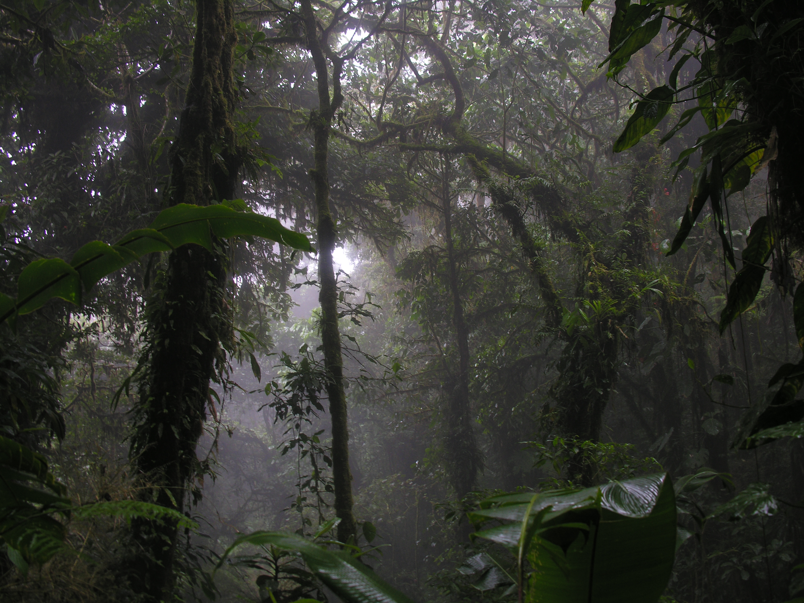

Investigadores activos
18

Estación Biológica Monteverde
Día 4 de 7
Estado general: operación activa
18
2
1
4
Equipo: Biologia
Ubicacion: Sendero Norte
Horario: 08:30 - 11:30
En progreso
Equipo: Hidrologia
Ubicacion: Rio Claro
Horario: 09:00 - 12:00
Pendiente
Equipo: Meteorologia
Ubicacion: Torre Este
Horario: 10:00 - 12:30
Suspendida
Equipo: Geologia
Ubicacion: Sector Sur
Horario: 11:00 - 13:00
Completada
Equipo: Biologia
Ubicacion: Corredor Oeste
Horario: 13:00 - 15:00
En progreso
Integrantes: 6
Mision actual: monitoreo de anfibios
Estado: activo
Proxima actividad: revision de camaras trampa
Integrantes: 4
Mision actual: muestreo de calidad del agua
Estado: en ruta
Proxima actividad: analisis de muestras
Integrantes: 3
Mision actual: lectura de estacion climatica
Estado: con alerta
Proxima actividad: revisar sensor remoto
Integrantes: 5
Mision actual: registro de formaciones rocosas
Estado: finalizando
Proxima actividad: carga de datos